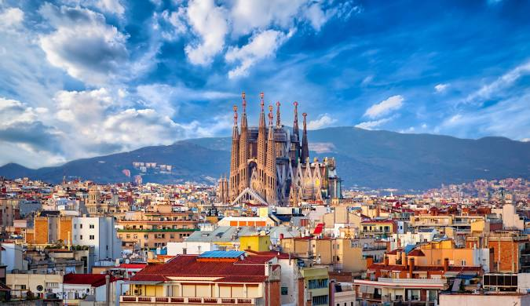
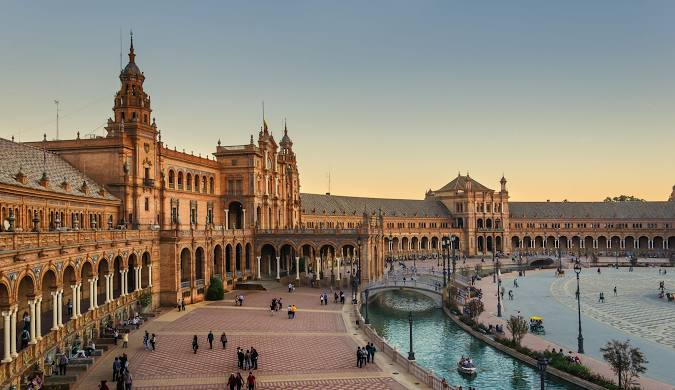
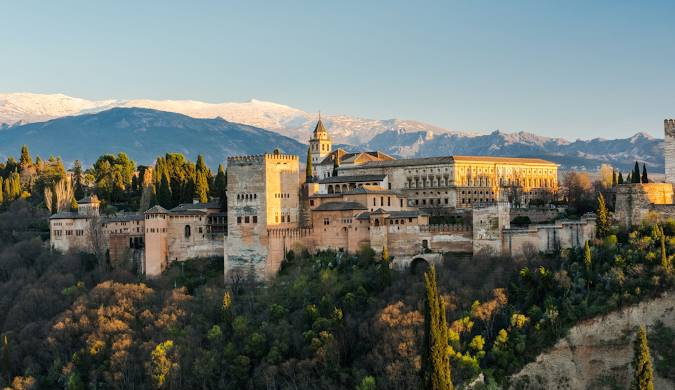

바르셀로나
가우디의 도시, 지중해의 진주
사그라다 파밀리아와 구엘 공원으로 대표되는 가우디의 건축 예술을 만나보세요. 람블라스 거리의 활기찬 분위기와 바르셀로네타 해변의 여유로움을 함께 즐길 수 있는 매력적인 도시입니다.
- 🏛️ 주요 관광지: 사그라다 파밀리아, 구엘공원, 카사 바트요, 카사 밀라
- 🏖️ 추천 활동: 해변 산책, 고딕 지구 탐방, 라 보케리아 시장 방문
- 🍽️ 대표 음식: 파에야, 타파스, 피디아

마드리드
스페인의 심장, 예술과 문화의 도시
프라도 미술관과 레이나 소피아 미술관에서 세계적인 예술 작품들을 감상하세요. 레티로 공원의 여유로움과 그란 비아의 활기찬 쇼핑을 즐길 수 있는 매력적인 수도입니다.
- 🏛️ 주요 관광지: 프라도 미술관, 레티로 공원, 마요르 광장, 왕궁
- 🎨 추천 활동: 미술관 투어, 플라멩코 공연 관람, 엘 라스트로 벼룩시장 방문
- 🍖 대표 음식: 코치니요 아사도, 카라멜로스, 초리조

세비야
정열의 도시, 플라멩코의 본고장
알카사르 궁전과 세비야 대성당의 웅장한 건축물을 감상하세요. 산타 크루즈 지구의 좁은 골목길과 플라자 데 에스파냐의 아름다움을 느낄 수 있는 안달루시아의 중심 도시입니다.
- 🏰 주요 관광지: 알카사르 궁전, 세비야 대성당, 히랄다 탑, 스페인 광장
- 💃 추천 활동: 플라멩코 공연, 리버 크루즈, 타파스 바 투어
- 🥘 대표 음식: 가스파초, 살모레호, 스페인 햄

그라나다
알함브라의 도시, 이슬람과 기독교의 만남
알함브라 궁전의 아름다운 정원과 건축물을 감상하세요. 알바이신 지구의 전통적인 분위기와 시에라 네바다의 웅장한 전경을 함께 즐길 수 있는 매력적인 도시입니다.
- 🏰 주요 관광지: 알함브라 궁전, 헤네랄리페 정원, 알바이신 지구
- 🌅 추천 활동: 일몰 감상, 아랍 목욕탕 체험, 타파스 바 투어
- 🍽️ 대표 음식: 하몬, 미가스, 알파후레스